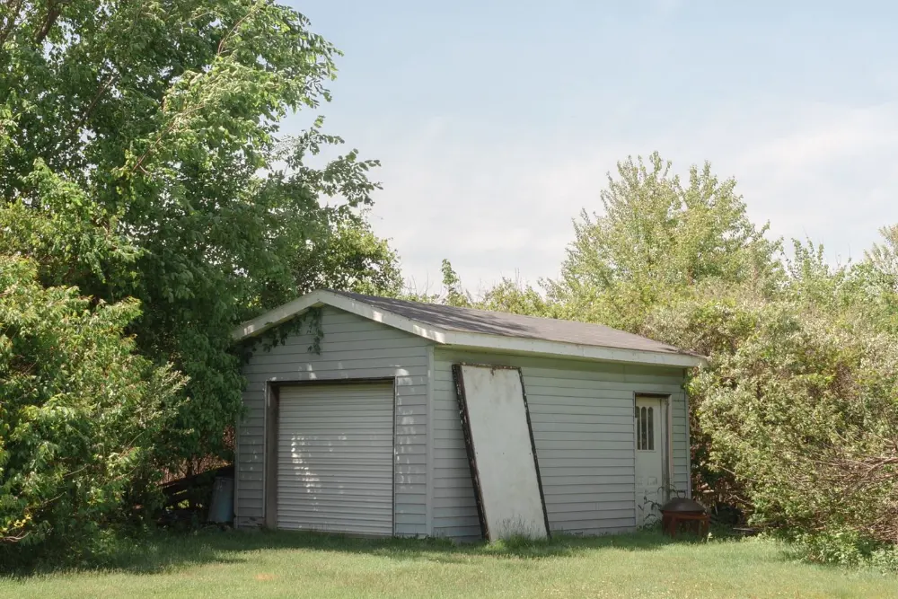

Shed, deck & fence removal in Winnipeg
demolition
Torn down and gone in the same visit
The shed has been leaning for three years. The deck boards are soft in two places. The fence came down in the last windstorm and half of it is still standing out of habit.

We tear it down and take it away in one visit — one contractor, one invoice, no gap where a pile of broken lumber sits in your yard waiting for a second company to come and collect it.
What we do
- Sheds, decks, fences, pergolas, playstructures and detached garages
- Concrete pads, deck footings and post bases out with the skid steer
- Fence posts pulled with the concrete plug still attached
- Nails and screws swept — the part people forget until a tire finds one
- Site left graded and clean
Everything we take in this category
- Shed
- Torn down and hauled in one visit, with metal sheds going to scrap. If the floor sits on a concrete pad, say so: the pad is priced by weight and belongs in the quote, not in a surprise.Also: Garden shed, Storage shed, Tool shed, Metal shed
- Deck
- Boards, joists, railings and stairs. Winter is genuinely the gentlest time to take a deck out, because frozen ground does not rut under the weight.Also: Wood deck, Composite deck, Deck boards, Porch, Deck stairs
- Deck footings
- Come out with the skid steer. They are concrete, so they are priced by weight.Also: Concrete footings, Sonotubes, Piles, Post bases
- Fence
- Posts come out with the concrete plug still attached. Leaving broken posts in the ground is how the next person to build a fence ends up with a bad day.Also: Wood fence, Privacy fence, Picket fence, Fence panels
- Chain link fence
- The mesh and the posts go to scrap.Also: Chain-link, Wire fence, Metal fence, Dog run, Kennel
- Detached garage
- A garage teardown is a structural demolition and usually needs a City of Winnipeg permit, which is on the property owner. The slab comes out separately and is priced by weight.Also: Garage, Carport
- Retaining wall
- Old railway ties are treated with creosote and cannot go in regular disposal or be burned. Block walls are heavy material, priced by weight.Also: Timber retaining wall, Landscape ties, Railway ties
- Trampoline
- The frame is galvanized steel and goes to scrap; the mat and net go to disposal. Taken apart on site.Also: Trampoline frame, Trampoline net
- Playset
- Wooden playsets are a small demolition, not a lift: they are bolted together and often set in the ground. Metal swing sets go to scrap.Also: Swing set, Play structure, Playground, Climbing frame, Slide
- Basketball hoop
- Portable hoops have a base full of sand or water that has to be emptied first. In-ground poles set in concrete come out with the skid steer.Also: Basketball net, Portable hoop, In-ground hoop
- Greenhouse
- Glass panels are wrapped; polycarbonate and the frame are sorted separately.Also: Cold frame, Polytunnel
- Flagpole
- Cut down or pulled, including the concrete base.Also: Clothesline, Clothesline pole
Not on the list? Check everything we take, A to Z, or text us a photo and we will tell you straight.
What it costs
Priced on size, materials and access. Concrete footings and pads are weighed separately and quoted upfront, not added at the end. Free on-site estimate.
Get a free quoteWinter is the gentlest time
Frozen ground means less rutting and less lawn damage from the equipment, and cleaner site restoration come spring. It is the one job that is genuinely easier in a Winnipeg January.